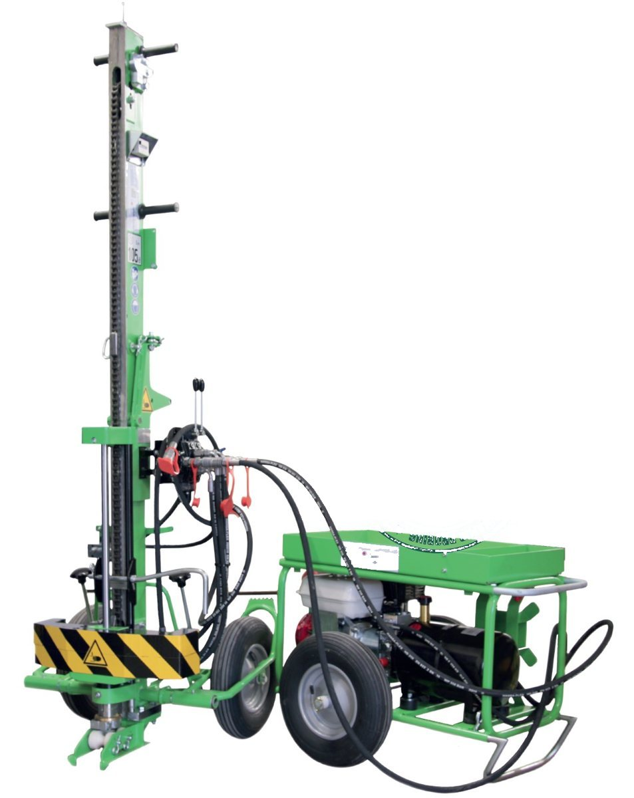
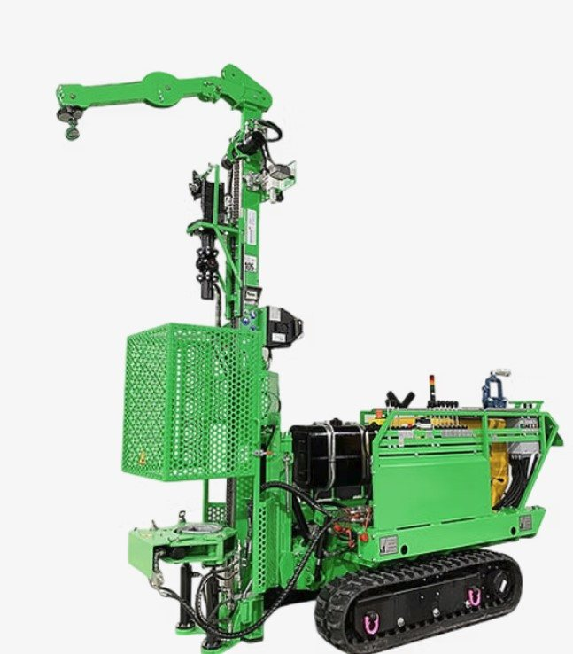

PAGANI TG 63-100
Penetrometru static-dinamic
Montat pe șenile. Îl folosim pentru penetrare statică cu con (CPT) și penetrare dinamică grea, direct pe amplasament.
- Încercări
- CPT · DPSH
- Deplasare
- pe șenile
Investigăm terenul cu instalații proprii de foraj și penetrare și analizăm probele în laboratorul nostru, autorizat de grad II. Studiul geotehnic îi spune proiectantului cum și la ce adâncime se fundează construcția.
Elaborăm studii geotehnice pentru construcții civile și industriale, drumuri, poduri, căi ferate, aeroporturi, parcuri eoliene și fotovoltaice, canale, tuneluri, construcții hidrotehnice și pentru stabilitatea masivelor de pământ.
Studiul conține stratificația terenului, nivelul apei subterane, caracteristicile fizice și mecanice ale fiecărui strat și recomandările de fundare: adâncimea, presiunea convențională și tasările estimate.
Probele prelevate din foraje ajung în laboratorul nostru. Rezultatele trec direct în fișa forajului și în calculul fundațiilor.
| Încercare | Ce determină | Simbol |
|---|---|---|
| Umiditate naturală | Conținutul de apă al pământului | w |
| Greutate volumetrică | Starea naturală, densitatea, porozitatea | γ, n, e |
| Granulozitate | Procentele de argilă, praf, nisip și pietriș | % |
| Limite de plasticitate | Limitele de curgere și frământare, indicii de plasticitate și consistență | wL, wP, IP, IC |
| Umflare liberă | Comportarea pământurilor contractile | UL |
| Compresibilitate în edometru | Modulul de deformație edometric, tasarea specifică | M2-3, ep2 |
| Rezistența la forfecare | Unghiul de frecare internă, coeziunea | φ, c |
| Compactare Proctor | Densitatea maximă și umiditatea optimă de compactare | ρd max, wopt |
Montat pe șenile. Îl folosim pentru penetrare statică cu con (CPT) și penetrare dinamică grea, direct pe amplasament.

Pentru penetrări dinamice ușoare, medii și grele și pentru încercarea SPT. Se deplasează pe roți, deci ajunge și pe amplasamente mici.

Pentru foraje geotehnice cu prelevare de probe tulburate și netulburate, inclusiv pe terenuri greu accesibile.
Un exemplu real: forajul FG 1, cu trei straturi, apa subterană interceptată la 3,2 m și stabilizată la 3,5 m, și rezultatele încercărilor pe fiecare probă.

Trimite-ne amplasamentul și tipul construcției. Îți spunem câte foraje sunt necesare și în cât timp e gata studiul.